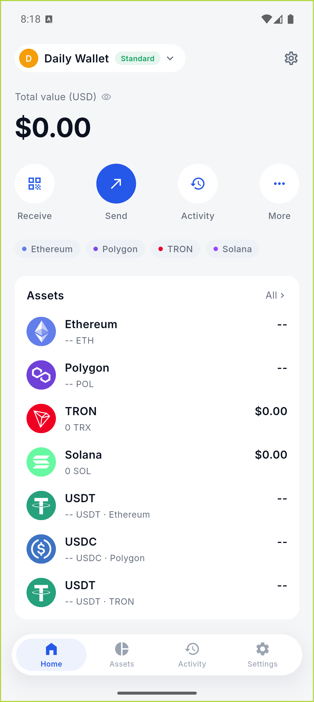
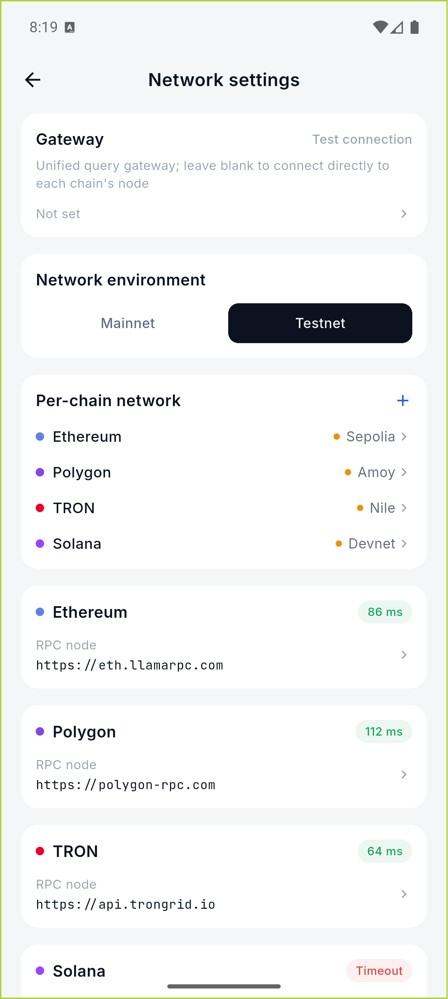
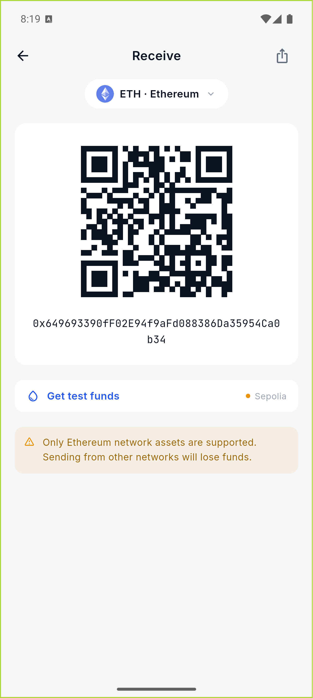
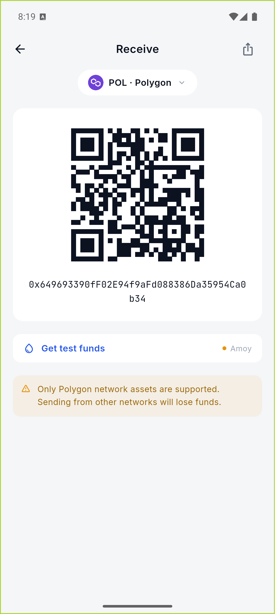
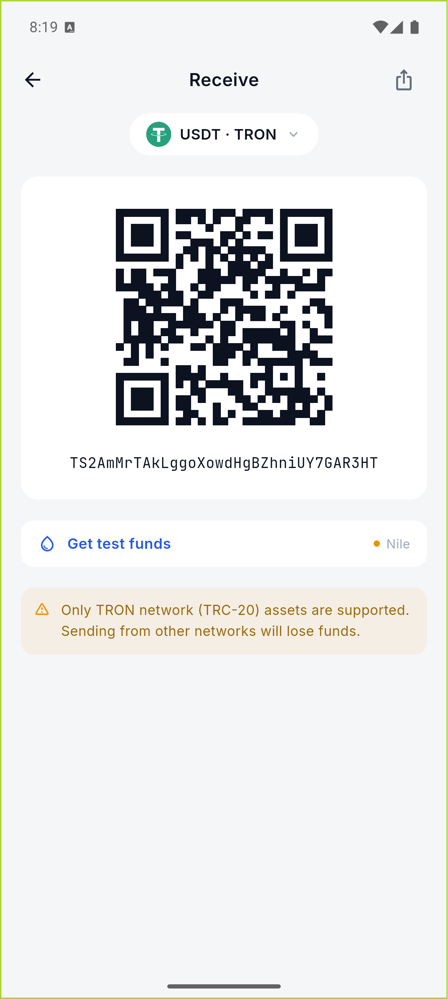
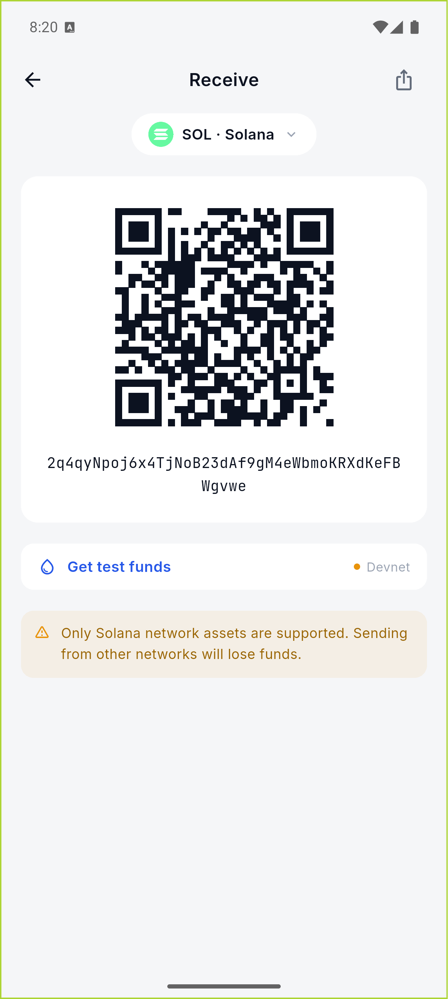

Android Emulator · Real Crypto
测试网实测报告
真实 Wallet Core、真实公开 RPC、真实二维码与系统认证流程
2026-07-26 · emulator-5554
静态检查0 问题
目标测试网3 / 3
真实转账6 / 6
原生币 / 稳定币3 + 3
结论
Polygon Amoy、TRON Nile、Solana Devnet 已在 Android 模拟器上完整跑通「真实余额读取 → 获取链参数 → Wallet Core 本地签名 → App 广播 → 链上确认 → 余额减少断言」。三条链分别完成原生币与稳定币转账，共 6 笔真实交易；没有把模拟签名、复制到剪贴板或水龙头请求当成转账成功。
Mobile 基础链路验收（三链）
| 网络 | 余额展示 | 普通转账 | 稳定币转账 |
|---|---|---|---|
| Polygon Amoy | POL + USDC | POL · 0x7bbb…20fb | USDC · 0x4ab2…8041 |
| TRON Nile | TRX + USDT | TRX · e567…5b6a | USDT · 8948…df29 |
| Solana Devnet | SOL + USDC | SOL · XEN8…wKtH | USDC · 23a1…yszU |
在线实测明细
| 项目 | 结果 | 证据 / 说明 |
|---|---|---|
| Wallet Core 原生库 | 通过 | com.trustwallet:wallet-core:4.6.13；JNI 加载、助记词生成、四链地址派生通过。 |
| Flutter 单元 / UI 回归 | 327 / 327 | flutter test 全量通过；flutter analyze 为 0 问题。 |
| Sepolia RPC | 通过 | eth_chainId = 0xaa36a7 |
| Polygon Amoy RPC | 通过 | eth_chainId = 0x13882；广播节点切换为 polygon-amoy-bor-rpc.publicnode.com，并加入 Polygon 25 gwei 最低优先费保护。 |
| TRON Nile RPC | 通过 | /wallet/getnowblock 返回 64 字符 blockID。 |
| Solana Devnet RPC | 通过 | getVersion 返回有效版本信息。 |
| 真实余额读取 | 三链双资产通过 | Amoy POL/USDC、Nile TRX/USDT、Devnet SOL/USDC 均由生产余额服务读取；新增 SPL getTokenAccountsByOwner 汇总，不再把 Solana 稳定币标记为 unsupported。 |
| 测试币准备 | 通过 | Nile 官方水龙头到账 2000 TRX + 1000 USDT；Circle 水龙头到账 Amoy/Devnet 各 20 USDC；Solana 官方 GitHub 验证后到账 2.5 SOL；Polygon PoW 水龙头到账 0.01 POL。 |
| Wallet Core 多链签名 | 通过 | EVM EIP-1559、TRON secp256k1 protobuf、Solana ed25519 legacy transaction 均在 Android 本地密钥中完成签名。 |
| TRON 广播 | 通过 | 修复 TAPOS blockID 取值与 /wallet/broadcasthex 格式；TRC-20 余额缓存采用确认后轮询。 |
| Wallet Core EVM 签名 | 通过 | 解析 App 生成的 type-2 EIP-1559 envelope，通过 AnySigner 生成原始签名交易及交易哈希；不支持的链继续 fail-closed。 |
| Sepolia 原生 ETH 转账 | 通过 | 回执 status = 0x1 · 查看交易 0xee6b…e3b8 |
| Test USDT 铸币 | 通过 | 向测试钱包铸造 100 Test USDT，余额断言通过 · 查看交易 0x34b4…f945 |
| Test USDT 转账 | 通过 | 转出 1 Test USDT，发送方余额减少断言通过 · 查看交易 0x8523…749b |
| App 一体化发送 | 通过 | 热钱包确认后读取当前网络、获取实时参数、本地签名并仅广播一次；Sepolia 资产选择自动使用 Test USDT 合约与 18 位精度。 |
模拟器截图






本轮修复
三链不再停留在占位序列化或复制到剪贴板。 Android Wallet Core Bridge 已实现 TRON 与 Solana 的真实签名载荷；TRON 使用规范 protobuf raw_data 与 broadcasthex，Solana 使用 ed25519 签名的 legacy transaction。余额注册表增加 Amoy USDC、Nile USDT、Devnet USDC，并实现 SPL 余额汇总。Polygon 广播改用可写 RPC，费用估算加入节点要求的最低优先费。
测试账户安全
链上回归使用独立的 Sepolia 测试钱包；助记词仅保存在被 Git 忽略且权限为
0600 的本地测试配置中，不进入源码、日志或本报告。公开示例助记词地址曾出现自动扫币行为，因此已永久停止使用。